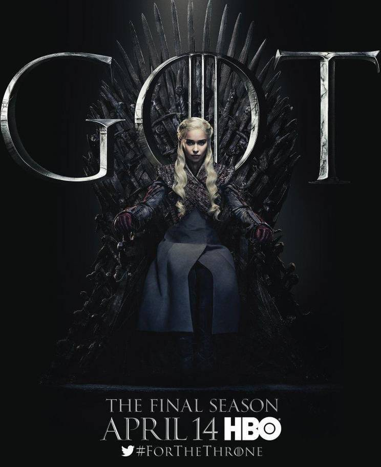

조지 R.R. 마틴의 원작 얼음과 불의 노래를 바탕으로 소설가 겸 각본가인 데이비드 베니오프와 D.B.와이스가 제작하고 HBO에서 방영한 판타지 TV 시리즈. 2011년 4월부터 6월까지 시즌 1 방영을 시작으로 2019년 5월 19일 8시즌을 마지막으로 종료되었다. 시즌 1은 1권 왕좌의 게임, 시즌 2는 2권 왕들의 전쟁, 시즌 3과 4는 3권 검의 폭풍의 내용을 각각 다루었으며, 시즌 4와 시즌 5는 기본적으로 까마귀의 향연과 드래곤과의 춤을 다루지만 일정 부분 소설에서 진행되지 않은 부분을 다루기도 했다. 시즌 6의 경우엔 본격적으로 드라마 오리지널 내용과 출간되지 않은 소설 내용이 진행되었다. HBO 드라마 사상 최고의 메가 히트작 중 하나가 되었으며, 특히 유럽을 위시하여 전 세계적으로 폭발적인 인기를 끌었다. 매 시즌 투입되는 비용은 무려 6~7천만 달러 선으로, 웬만한 극장용 블록버스터 영화 한 편을 제작할 금액이다. 실제로 작중 내내 영화급의 디테일과 스케일을 보여주고 있으며, 제작비가 특히나 많이 드는 관계로 HBO에서 성공하기 위해 많이 신경썼다.